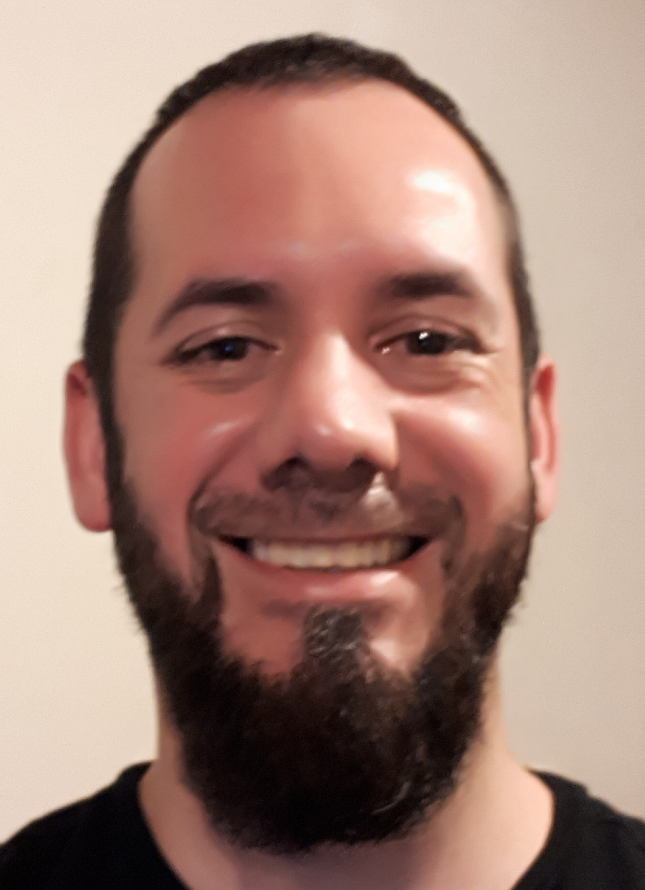

Información Personal

Perfil
Soy una persona creativa, lógica y práctica que le gusta tomar retos que me ayuden a mejorar como profesional y como persona.
Siempre estoy dispuesto a dar lo mejor de mi en todo momento y me encanta poder ayudar aquellos que necesiten de mi ayuda. Tengo estudios
en el área de administración hotelera y de alimentos y bebidas lo que me ayudó a formar mi caracter de persona servicial,
no obstante hace varios años decidí enforcarme en lo que siempre consideré una pasión para mi, el arte de la programaión,
y obtuve un técnico en el desarrollo de aplicaciones móviles en una universidad, lo que me ayudó a conseguir el trabajo que hoy
por hoy tengo. Al ser perseverante y enfocado he logrado avanzar en mi trabajo, donde logré escalar hasta obtener una posición que pocos gustan
debido a su complejidad y cuidado que hay que tener, esto gracias a la oportunidada que mis superiores me dieron al ver mis cualidades y aptitudes
para el puesto.
Idiomas
- Español
- Inglés